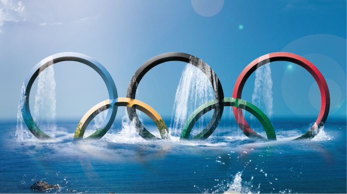
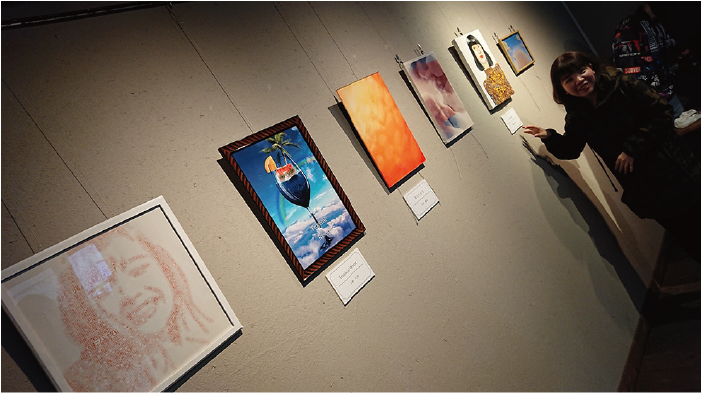
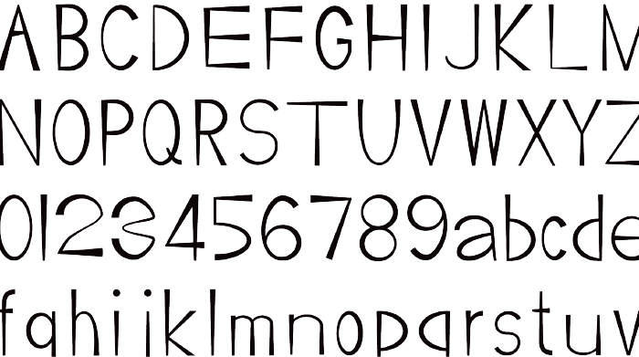
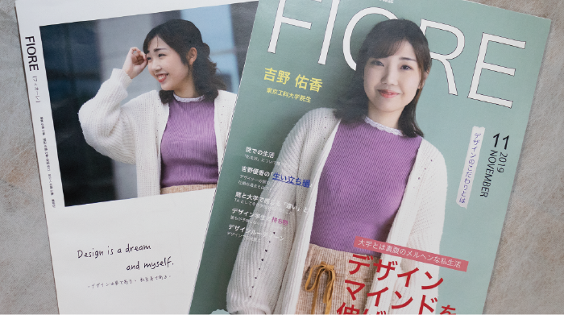
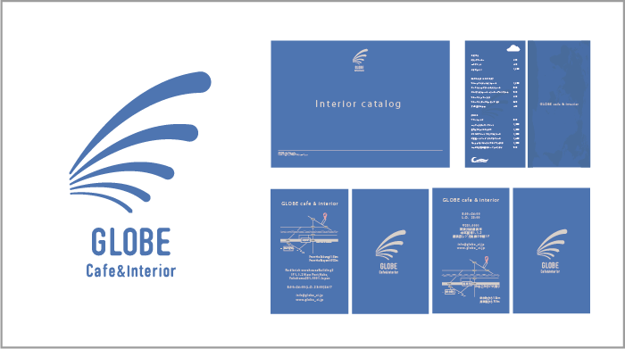
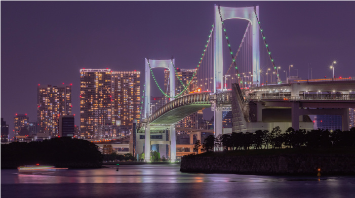
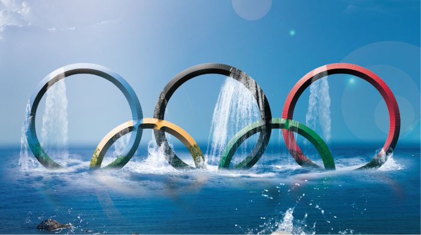
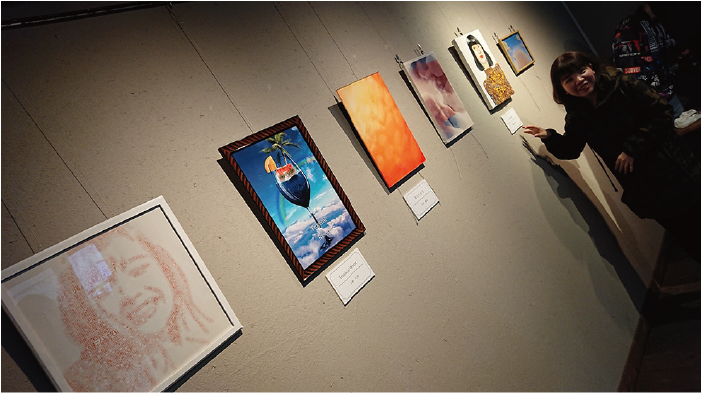
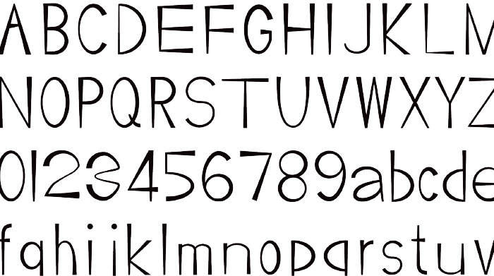
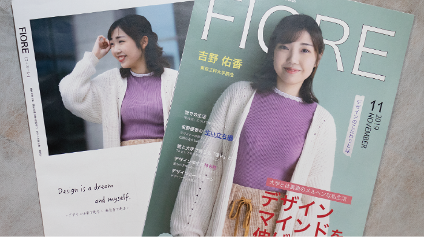
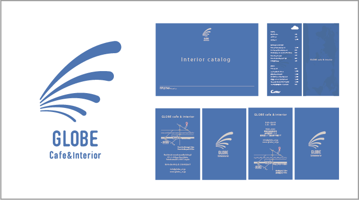
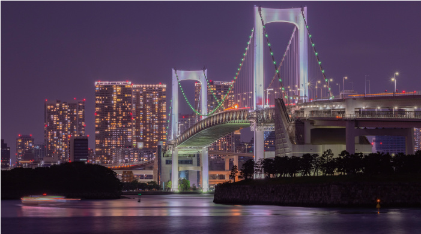
Sato Kanamu
Portfolio
これまで東京工科大学にてデザインを学んできました。
この度はこのポートフォリをサイトをご覧いただき、
誠にありがとうございます
私はそもそもデザイン、パソコンを操作することがとても好きです。
この熱意を仕事の熱意へ転換できるようにしたいです。
わたしはデザイン学部として様々な作品を作ってきました。なかでも印象に残っているのは2年次後期の画像加工というAdobe Photoshopを使ってグラフィックス作品を作るという授業です。最終課題では 2020 東京 TOKYO というキーワードでグラフィックス作品を作るというもので、私はPhotoshopに触ったことがなかったので、自主制作をたくさん行い、Photoshopを早いオペレートでこなせるようになりました。その最終課題ではかなり努力して、自分で素材を撮影して作品を作りました。中間発表で指摘を受けたところを自分なりに解釈して本気で作りこんだところ、教員から「完成度が非常に高い」といわれ、その授業では評定Sをいただくことができました。
d0117105b2@edu.teu.ac.jp
@629_k176